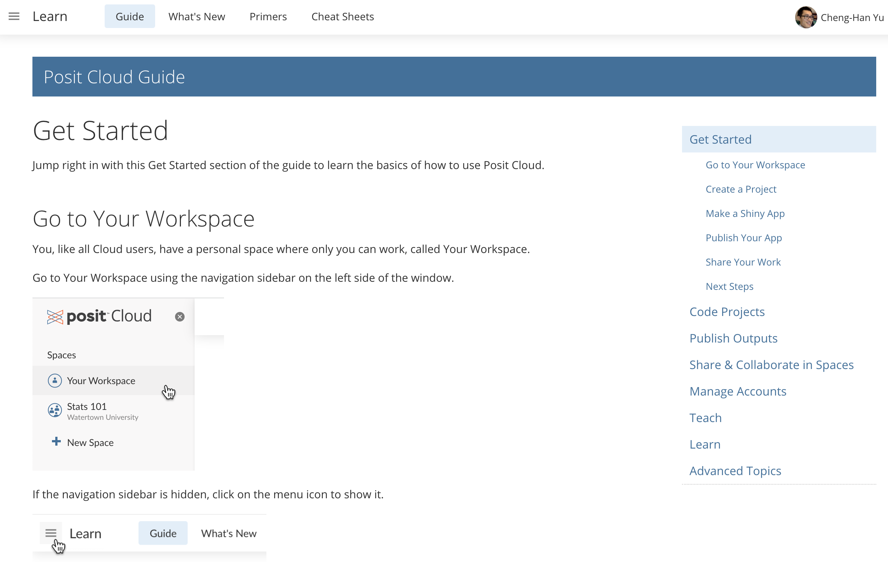
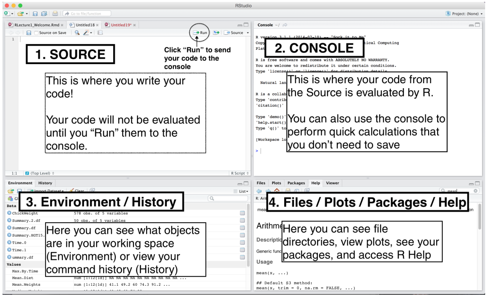
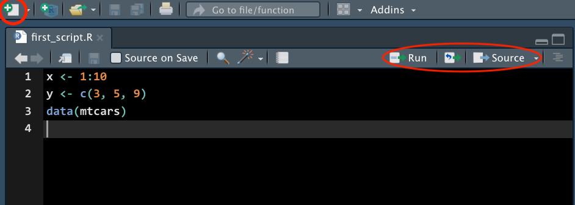

3 Tool foR Data
This chapter provides a broad overview of the R language that will get you programming right away.
3.1 Let’s get equipped with our tools!
Integrated Development Environment


- R and Python are programming languages.
- Posit Cloud offers two integrated development environments (IDE).
- These IDEs are software for efficiently writing computer programs.
R and Posit

- R: free open-source programming language üìà
- R is mainly for doing data science with strength in statistical modeling, computing and data visualization
- Posit: interface for R, Python, etc. called an IDE (integrated development environment), e.g. “I write R code in the RStudio IDE”.
- Posit is not a requirement for programming with R, but it’s commonly used by R developers, statisticians and data scientists.
The R User Interface
- RStudio IDE includes
- a viewable environment, a file browser, data viewer and a plotting pane. üëç
- also features integrated help, syntax highlighting, context-aware tab completion and more! üòÑ


☁️ Posit Cloud - Statistics w/o hardware hassles
- üòé You can implement R/Python programs without installing R/Python and the IDE on your laptop!
- üòé Posit Cloud lets you do, share and learn data science online for free!
üòû Getting everything ready locally: Lots of friction
- Download and install R/Python
- Download and install IDE
- Install wanted R/Python packages:
- tidymodels
- tidyverse
- NumPy
- …
- Load these packages
- Download and install tools like Git
ü§ì Posit Cloud: Much less friction

- Go to https://posit.cloud/
- Log in
>hello R!Install Posit Cloud


New Projects

- To create a new project, click New Project in the top right corner as shown above.
Workspaces
- When you create an account on Posit Cloud, you get a workspace of your own.
- You can add a new workspace (click + New Space in sidebar) and control its permissions.

First R Code in Posit Cloud!

More Tips
- For more help, read the Posit Cloud guide.

3.2 Working in Posit Cloud
Panes

Source Pane
R Script
- An R script is a .R file that contains R code.
- To create an R script, go to File > New > R Script, or click the green-plus icon on the top left corner and select R Script.

Python Script
- A Python script is a .py file that contains Python code.
- To create a Python script, go to File > New > Python Script, or click the green-plus icon on the topleft corner and select Python Script.
Run Code
-
Run : run the current line or selection of code.
-
ctrl + enter(Win) orcmd + enter(Mac)
-
-
Icon to the right of Run : re-run the previous code.
-
alt + ctrl + p(Win) oroption + cmd + p(Mac)
-
-
Source : run all the code in the R script.
-
shift + ctrl + s(Win) orshift + cmd + s(Mac)
-
-
Source with Echo : run all the code in the R script with the code printed in the console.
-
shift + ctrl + enter(Win) orshift + cmd + enter(Mac)
-
Run Python Code
- Running Python code may require you to update some packages. Please say YES!
- When you run the Python code in the R console, the console will switch from R to Python.
- Type
quitin the Python console to switch back to the R console.
Environment Tab
- The (global) environment is where we are currently working.
- Anything created or imported into the current R/Python session is stored in our environment and shown in the Environment tab.
- After we run the R script from Figure 3.7, the following objects are stored in the environment:
- Data set
mtcars - Object
xstoring integer values 1 to 10. - Object
ystoring three numeric values 3, 5, 9.
- Data set

- After we run the Python script from Figure 3.8, the following object is stored in the environment:
- Object
bstoring a stringHello World!
- Object

History Tab
- The History tab keeps a record of all previous commands.
- Save icon: save all history to a file
- To Console: send the selected commands to the console.
- To Source : inserted the selected commands into the current script.

In the console pane, use ⬆️ to show the previous commands.
R Packages üì¶
- When we start an R session, only built-in packages like base, stats, graphics, etc. are available.
- Installing packages is an easy way to get access to other data and functions.


 !
!
Installing R Packages
- To install a package, such as the ggplot2 package, we use the command
install.packages("ggplot2")- A different option in the right-bottom pane is Packages > Install.
Loading R Packages üì¶
- To use any function or data in ggplot2, we write
ggplot2::followed by the name of the function or data.
ggplot2::ggplot(ggplot2::mpg,
ggplot2::aes(
x = displ,
y = hwy,
colour = class)
) +
ggplot2::geom_point()Help
- What if you don’t know how a function works or what a data set is about ❓
- üëâ Simply type
?followed by the data name or function name to get more information.
- üëâ Simply type
?mean
?mtcars- A document will show up in the Help tab, teaching you how to use the function or explaining the data set.
- An example is shown for the mpg data set in Figure 3.11 below.

3.3 Install R and R Studio Locally to Your Computer
Install R
Step 1
- Go to https://cloud.r-project.org.
- Click Download R for [your operating system].

Step 2
- If you are a Mac user, you should see the page shown below in Figure 3.13.
- You are recommended to download and install the latest version of R (now R-4.2.1) if your OS version allows to do so.
- Otherwise, choose a previous version, such as R-3.6.3.

- If you are a Windows user, after clicking Download R for Windows, please choose base version and then click Download R-4.2.1 for Windows.
Step 3
- Once you successfully install R, when you open R, you should be able to see the following R terminal or console:

Welcome to the R World!
- Now you are ready to use R for statistical computation.
- You can use R like a calculator.
- After typing your formula, simply hit enter and you get the answer!
Install RStudio
Step 1
- In the RStudio website, please choose Products > RStudio as shown in Figure 3.16.

Step 2
- Choose RStudio Desktop and click DOWNLOAD RSTUDIO DESKTOP for the free version.

Step 3
- Click DOWNLOAD RSTUDIO FOR [YOUR SYSTEM] (Figure 3.18).
- Follow the standard installation steps and you should get the software.
- Make sure that R is installed successfully on your computer before you download and install RStudio.

RStudio Screen
- When you open RStudio, you should see something similar to Figure 3.19 below.
- If you do, congratulations!
- You can now do any statistical computation in R using RStudio locally on your computer.
3.4 Operators
R is a Calculator
Arithmetic Operators

Examples
2 + 3 * 5 + 4[1] 212 + 3 * (5 + 4)[1] 29- We have to do the operation in the parentheses first, as the PEMDAS rule describes in Figure 3.21 below.

R Does Comparisons
Logical Operators
Examples
5 <= 5[1] TRUE5 <= 4[1] FALSE# Is 5 is NOT equal to 5? FALSE
5 != 5[1] FALSE## Is TRUE not equal to FALSE?
TRUE != FALSE[1] TRUE## Is not TRUE equal to FALSE?
!TRUE == FALSE[1] TRUE## TRUE if either one is TRUE or both are TRUE
TRUE | FALSE[1] TRUEBuilt-in Functions
- R has lots of built-in functions, especially for mathematics, probability and statistics.
Examples
Commenting
- Use
#to add a comment so that the text after#is not read as an R command. - Writing (good) comments is highly recommended.
- Comments help readers, and more importantly yourself, understand what the code is doing.
- They should explain the why, not the what.


Objects and Funtions in R
Everything that exists is an object.
Everything that happens is a function call.
– John Chambers, the creator of the S programming language.
- We have made lots of things happen!
- Even arithmetic and logical operators are functions!
`+`(x = 2, y = 3)[1] 5`&`(TRUE, FALSE)[1] FALSECreating Variables
- A variable stores a value that can be changed according to our need.
- Use the
<-operator to assign a value to the variable. (Highly recommendedüëç)
x <- 5 ## we create an object, value 5, and call it x, which is a variable.
x ## type the variable name to see the value stored in the object x[1] 5(x <- x + 6) # We can reassign any value to the variable we created[1] 11x == 5 # We can perform any operations on variables[1] FALSElog(x) # Variables can also be used in any built-in functions[1] 2.397895Bad Naming
- ❌ Unless you have a very good reason, don’t create a variable whose name is the same as any R built-in constant or function!
- üòü It causes lots of confusion when your code is long and when others read it.
## THIS IS BAD CODING! DON'T DO THIS!
pi ## pi is a built-in constant[1] 3.141593(pi <- 20)[1] 20abs ## abs is a built-in functionfunction (x) .Primitive("abs")(abs <- abs(pi))[1] 203.5 Object Types
Types of Variables
- Use
typeof()to check which type a variable belongs to. - Common types include
character,double,integerandlogical. - To check if it’s of a specific type, use
is.character(),is.double(),is.integer(),is.logical().
Variable Types in R and in Statistics
- Type
characterandlogicalcorrespond to categorical variables.- Type
logicalis a special type of categorical variables that has only two categories (binary).- We usually call it a binary variable.
- Type
- Type
doubleandintegercorrespond to numerical variables. (an exception later)- Type
doubleis for continuous variables - Type
integeris for discrete variables.
- Type
3.6 R Data Structures
(Atomic) Vector
- To create a vector, use
c(), which is short for concatenate or combine. - All elements of a vector must be of the same type.
Operations on Vectors
- We can do the same operations on vectors that we do on a scalar variable (vector of length 1).
# Vector multiplication
v1 * v2[1] 12 800# Vector division
v1 / v2[1] 0.75 0.08sqrt(v2)[1] 2 10Recycling of Vectors
- If we apply arithmetic operations to two vectors of unequal length, the elements of the shorter vector will be recycled to complete the operations.
v1 <- c(3, 8, 4, 5)
# The following 2 operations are the same
v1 * 2[1] 6 16 8 10v1 * c(2, 2, 2, 2)[1] 6 16 8 10v3 <- c(4, 11)
v1 + v3 ## v3 becomes c(4, 11, 4, 11) when doing the operation[1] 7 19 8 16Subsetting Vectors
- To extract element(s) in a vector, use a pair of brackets
[]with element indexing. - The indexing starts with 1.
v1[1] 3 8 4 5v2[1] 4 100## The first element
v1[1] [1] 3## The second element
v2[2] [1] 100Factor
- A vector of type
factorcan be ordered in a meaningful way. - Create a factor by
factor(). - It is a type of integer, not character. üò≤ üôÑ
[1] "integer"levels(fac) ## Each level represents an integer, ordered from the vector alphabetically.[1] "high" "low" "med" str(fac) ## The integers show the level each element in vector fac belongs to. Factor w/ 3 levels "high","low","med": 3 1 2 Factor w/ 3 levels "low","med","high": 2 3 1List (Generic Vectors)
- Lists are different from vectors.
- Elements can be of any type, including lists.
- Construct a list by using
list()instead ofc().
Subsetting a List
## subset by name (a vector)
x_lst$idx [1] 1 2 3## subset by indexing (a vector)
x_lst[[1]] [1] 1 2 3typeof(x_lst$idx)[1] "integer"## subset by name (still a list)
x_lst["idx"] $idx
[1] 1 2 3## subset by indexing (still a list)
x_lst[1] $idx
[1] 1 2 3typeof(x_lst["idx"])[1] "list"
If list
xis a train carrying objects, thenx[[5]]is the object in car 5;x[4:6]is a train of cars 4-6.— @RLangTip, https://twitter.com/RLangTip/status/268375867468681216


Matrix
- A matrix is a two-dimensional analog of a vector.
- Use command
matrix()to create a matrix.
## Create a 3 by 2 matrix called mat
(mat <- matrix(data = 1:6, nrow = 3, ncol = 2)) [,1] [,2]
[1,] 1 4
[2,] 2 5
[3,] 3 6[1] 3 2[1] 3[1] 2Subsetting a Matrix
- To extract a sub-matrix, use the same indexing approach as vectors.
- Use comma
,to separate the row and column index.-
mat[2, 2]extracts the element of the second row and second column.
-
mat [,1] [,2]
[1,] 1 4
[2,] 2 5
[3,] 3 6## all rows and 2nd column
## leave row index blank
## specify 2 in coln index
mat[, 2][1] 4 5 6## 2nd row and all columns
mat[2, ] [1] 2 5## The 1st and 3rd rows
mat[c(1, 3), ] [,1] [,2]
[1,] 1 4
[2,] 3 6Binding Matrices
- We can generalize
c()used in vectors tocbind()(binding matrices by adding columns) andrbind()(binding matrices by adding rows) for matrices. - When matrices are combined by columns, they should have the same number of rows.
- When matrices are combined by rows, they should have the same number of columns.
Data Frame: The Most Common Way of Storing Data
- A data frame is of type list of equal-length vectors, having a 2-dimensional structure.
- It is more general than a matrix.
- Different columns can have different types.
- To create a data frame, use
data.frame()that takes named vectors as input.
## data frame w/ an dbl column named
## and char column named grade.
(df <- data.frame(age = c(19,21,40),
gender = c("m","f","m"))) age gender
1 19 m
2 21 f
3 40 m## a data frame has a list structure
str(df) 'data.frame': 3 obs. of 2 variables:
$ age : num 19 21 40
$ gender: chr "m" "f" "m"## must set column names
## or they are ugly and non-recognizable
data.frame(c(19, 21, 40), c("m","f", "m")) c.19..21..40. c..m....f....m..
1 19 m
2 21 f
3 40 mProperties of Data Frames
- Data frame has properties of matrix and list.
## rbind() and cbind() can be used on df
df_r <- data.frame(age = 10,
gender = "f")
rbind(df, df_r) age gender
1 19 m
2 21 f
3 40 m
4 10 fdf_c <-
data.frame(col = c("red","blue","gray"))
(df_new <- cbind(df, df_c)) age gender col
1 19 m red
2 21 f blue
3 40 m graySubsetting a Data Frame
- When we subset data frames, we can use either list or matrix subsetting methods.
df_new age gender col
1 19 m red
2 21 f blue
3 40 m gray## Subset rows
df_new[c(1, 3), ] age gender col
1 19 m red
3 40 m gray## select the row where age == 21
df_new[df_new$age == 21, ] age gender col
2 21 f blue3.7 Exercises
# ==============================================================================
## Vector
# ==============================================================================
poker_vec <- c(170, -20, 50, -140, 210)
roulette_vec <- c(-30, -40, 70, -340, 20)
days_vec <- c("Mon", "Tue", "Wed", "Thu", "Fri")
names(poker_vec) <- days_vec
names(roulette_vec) <- days_vec- Vector
The code above shows a Marquette student poker and roulette winnings from Monday to Friday. Copy and paste them into your R and complete problem 1.
- Assign to the variable
total_dailyhow much you won or lost on each day in total (poker and roulette combined). - Calculate the winnings overall
total_week. Print it out.
# ==============================================================================
## Factor
# ==============================================================================
# Create speed_vector
speed_vec <- c("medium", "low", "low", "medium", "high")- Factor
-
speed_vecabove should be converted to an ordinal factor since its categories have a natural ordering. Create an ordered factor vectorspeed_facby completing the code below. SetorderedtoTRUE, and setlevelstoc("low", "medium", "high"). Printspeed_fac.
_________ <- factor(________, ordered = ______,
levels = ______________________)# ==============================================================================
## Data frame
# ==============================================================================
# Definition of vectors
name <- c("Mercury", "Venus", "Earth", "Mars", "Jupiter", "Saturn",
"Uranus", "Neptune")
type <- c("Terrestrial planet", "Terrestrial planet", "Terrestrial planet",
"Terrestrial planet", "Gas giant", "Gas giant",
"Gas giant", "Gas giant")
diameter <- c(0.375, 0.947, 1, 0.537, 11.219, 9.349, 4.018, 3.843)
rotation <- c(57.63, -242.03, 1, 1.05, 0.42, 0.44, -0.73, 0.65)
rings <- c(FALSE, FALSE, FALSE, FALSE, TRUE, TRUE, TRUE, TRUE)- Data Frame
Data frames have properties of lists and matrices, so we skip lists and matrices and focus on data frames. You want to construct a data frame that describes the main characteristics of eight planets in our solar system. You feel confident enough to create the necessary vectors: name, type, diameter, rotation and rings that have already been coded up as above. The first element in each of these vectors corresponds to the first observation.
- Use the function
data.frame()to construct a data frame. Pass the vectorsname,type,diameter,rotationandringsas arguments todata.frame(), in this order. Call the resulting data frameplanets_df.
________ <- data.frame(______, ______, ______, ______, ______)- Use
str()to investigate the structure of the newplanets_dfvariable. Which are categorical (qualitative) variables and which are numerical (quantitative) variables? For those that are categorical, are they nominal or ordinal? For those numerical variables, are they interval or ratio level? discrete or continuous? - From
planets_df, select the diameter of Mercury: this is the value at the first row and the third column. Simply print out the result. - From
planets_df, select all data on Mars (the fourth row). Simply print out the result. - Select and print out the first 5 values in the
diametercolumn ofplanets_df. - Use
$to select theringsvariable fromplanets_df. - Use (f) to select all columns for planets that have rings.
You are encouraged to choose Plus version for more hours usage per month.↩︎